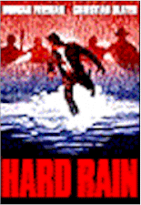
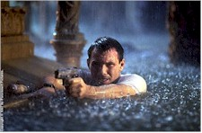
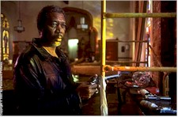

Contents | Features | Reviews | News | Archives | Store |
 |
|
| Movie Credits | Buy It! |
Hard Rain
Review by Elias Savada
Posted 16 January 1998
|  | Directed by Mikael Salomon Starring
Morgan Freeman, Christian Slater, Written by Graham Yost |
After the ice storms and heavy rains that have immobilized various parts of North America, this is not the film that will lift your spirits. If you were Noah, you'd probably want to sink the ark before you'd care to spend time (98 minutes of it) wading through this waterlogged effort. Last week it was Firestorm burning out it's welcome. This week we all get to take a fire hose to Hard Rain. This damp effort, originally intended for release last spring as The Flood, was retooled to play up the criminal element in the story by Graham Yost, who penned two of my favorite action pictures, Broken Arrow and Speed. In this case, the third time is not the charm. Paramount's trailers under its original title were tepid and yawn-inspiring. Hard Rain's promo reels are a vast step up. Too bad they expanded the 3-minute preview into a full-length feature.
A few moments for the story line: The efforts of four thieves to hijack a flood-drenched $3 million payload goes awry. The action sloshes around as the bad guys chase the good guy, whose efforts in thwarting the crooks is helped by Karen (Minnie Driver), a saintly church restorer. The local sheriff, voted out of office after a decade of service, decides he wants a bigger pension, so he becomes a bad guy, while one of the original bad guys decides he doesn't want to be as bad as the sheriff now is, so he becomes one of the good guys.
In an ironic twist, I gave an unintentional giggle when Christian Slater's wisecracking armored car courier character Tom wakes up in the slammer, a victim of mistaken identity. The real Slater just began a 90-day vacation in some mild-security penal hotel as a result of his drug-related assault conviction. At least he won't have to appear on talk shows to harp this lesser effort, despite the appearance of Morgan Freeman as Jim (the remorseful crook), one of the best actors working today and one of the reasons I watch my laserdisc of The Shawshank Redemption over and over and over again. When Freeman is good, he is very very good, and when he is bad (or at least in a bad film), we say he did it for the money. Hey, how could he know this one would end up like an overflowing toilet – no matter how much you jiggle the handle the film keeps on running. Screenwriter Yost's track record was great, director Salomon's background as a cinematographer for The Abyss indicated he could deal with the liquid logistics that Hard Rain demanded, and co-star and co-producer Slater scored big in last year's Broken Arrow.
Even Lou Grant and Sue Ann Nivens – er, Edward Asner and Betty White for those few not familiar with classic television comedy – are in the cast. Asner's Charlie picks up the hardworking "old fart" character who isn't as righteous as he appears to be, played by Scott Glenn in last week's Firestorm. Asner doesn't make it into reruns here and never shares a scene with his former TV co-star, as White does a wacky slant on her "Happy Homemaker Show" that she brought to The Mary Tyler Moore Show in 1973. Here she plays Doreen, the henpecking housewife of Henry (Richard Dysart, himself reduced to a Santa Claus look-alike from his Emy Award winning days as Leland McKenzie on TV's long-running L.A. Law). Oh how the mighty have fallen.
All in all, you have to at least give kudos for the technical effort the filmmakers put forth in undertaking a titanic achievement (pun intended) in flood management. At the end of the film my fingers looked like prunes, even if the film left me high and dry. A replica of the Midwestern town of Huntingberg was built in a huge aircraft hangar in Palmdale, California. Where once B-1 bombers were assembled became the set of 50 wooden buildings immersed in a tank two football fields long by one field wide and five feet deep. Filled with five million gallons of water, it's amazing none of the cast or crew was electrocuted or drowned (knock on driftwood). Sprinkle on top of that the constant rain that permeates every scene to the tune of 30,000 gallons per minute.
Yeah it looked real enough, but it never felt real enough. No one stays in the water this long and doesn't succumb to hypothermia. The lack of frosted breath (so painstakingly added during post-production in Titanic) lead me to believe this film was shot in a sauna. As to the filmmakers, my guess is they spend too much time in an isolation tank.
Contents | Features | Reviews | News | Archives | Store
Copyright © 1999 by Nitrate Productions, Inc. All Rights Reserved.